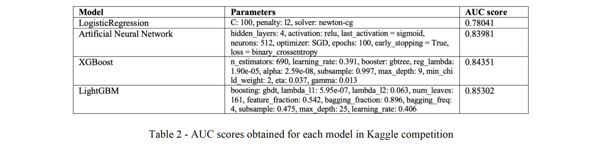

Predicting edges among academics in a co-authorship hypergraph
The goal of this project was to predict whether these test pair of authors will coauthor at least one paper together in the future, potentially in collaboration with other authors. The training network reflects the co-authorship of papers up to a specfic point in time, focusing on individuals in a specific academic subcommunity. The testing network captures new co-authorships that have arisen more recently, i.e., subsequent to the time when the training graph was constructed.
A full version of our report can be found here: Report. If you want to check the code, you can go here: Code.
The following node similarity measures were considered to predict the likelihood of future links between co-authors, where Γ(x) represents the neighbours of node x:
We used the following models for obtaining prediction results (AUC score):
The LightGBM model implemented scored the highest AUC of 85% in the final Kaggle competition. This model utilized parameter optimization, and combined graph metrics and node embeddings as features. In order to prevent overfitting, we sampled a set of edges and removed those edges from the graph before training the classifier.
Future avenues for research into Graph Convolutional Networks and other Deep Learning models would certainly improve the performance of the link prediction task, by leveraging node and edge features as well as using the node embeddings available from such frameworks. A Graph Convolutional Network, if implemented, would have been capable of representing the graph topology and local node information in a highly accurate manner.